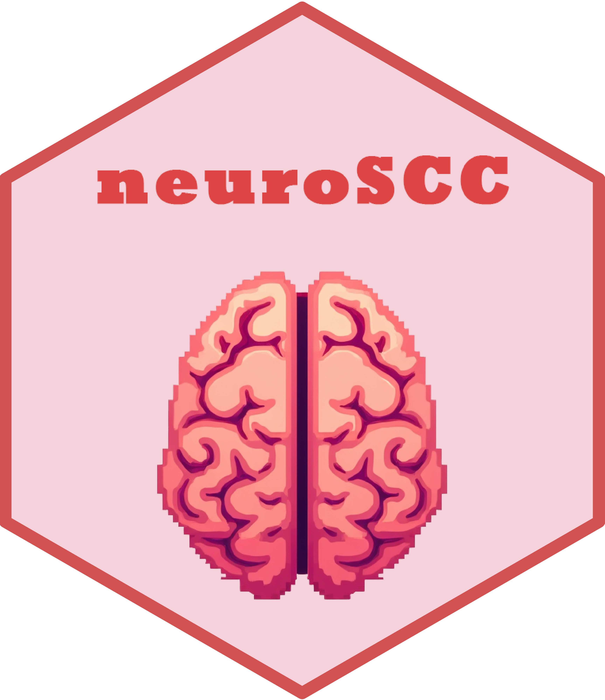
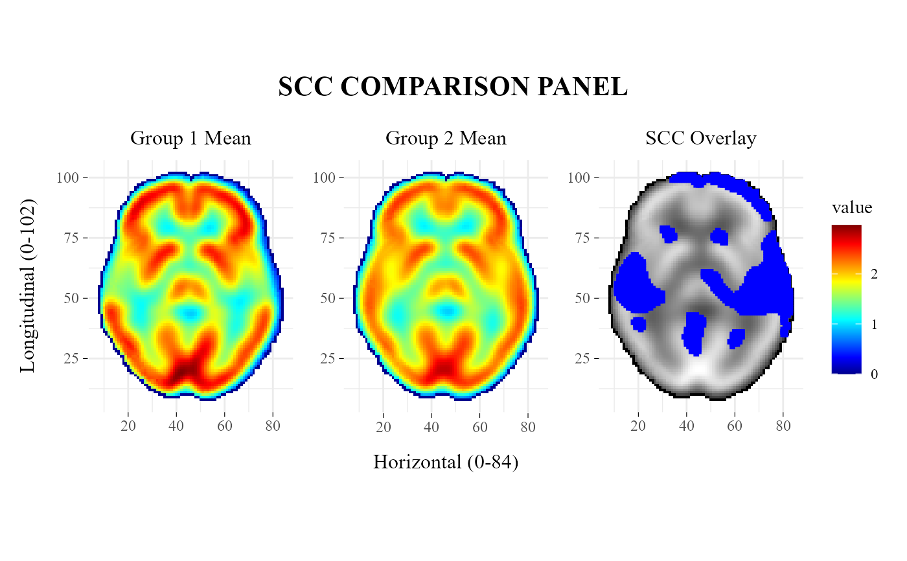

Plot group means and SCC comparison overlay
Source:R/plotSCCcomparisonPanel.R
plotSCCcomparisonPanel.RdThis function visualizes a two-group Simultaneous Confidence Corridor (SCC) result as a three-panel figure showing the mean estimate for each group and an overlay panel with SCC-detected differences.
Usage
plotSCCcomparisonPanel(
scc,
title = NULL,
zlim = "auto",
palette = "nih",
label1 = "Group 1 Mean",
label2 = "Group 2 Mean",
label3 = "SCC Overlay",
overlay = c("positive", "negative", "both", "none"),
useRawMeans = FALSE
)Arguments
- scc
A list-like SCC result object, typically returned by
ImageSCC::scc.image(), containing the components required for plotting group means and SCC-derived significant points.- title
character, title shown above the panel. IfNULL, the default title is"SCC COMPARISON PANEL".- zlim
Either
"auto"to compute color limits from the plotted values, or a numeric vector of length 2 specifying the lower and upper limits of the fill scale.- palette
character, color palette used in the mean heatmaps. Supported values are"nih","viridis", and"gray".- label1
character, title of the first group panel.- label2
character, title of the second group panel.- label3
character, title of the SCC overlay panel.- overlay
character, which SCC-detected points to overlay in the third panel. Supported values are"positive","negative","both", and"none".- useRawMeans
logical, ifTRUE, the group means are computed directly fromscc$Yaandscc$Yb. IfFALSE, the function usesscc$Yhat.
Value
A patchwork/ggplot object containing three aligned panels:
mean estimate for group 1,
mean estimate for group 2,
SCC overlay panel with detected positive and/or negative points.
Details
The first two panels use a shared continuous color scale to facilitate direct comparison between group mean estimates. The third panel uses a grayscale background and overlays SCC-detected significant points.
Positive and negative SCC detections are obtained internally using
getPoints.
See also
SCCcomp for the example two-group SCC object used in the examples. getPoints for extraction of SCC-detected significant points. plotSCCpanel for single-group SCC visualization. plotValidationPanel for SCC versus SPM performance visualization.
Examples
data("SCCcomp", package = "neuroSCC")
plotSCCcomparisonPanel(SCCcomp, title = "SCC COMPARISON PANEL")
